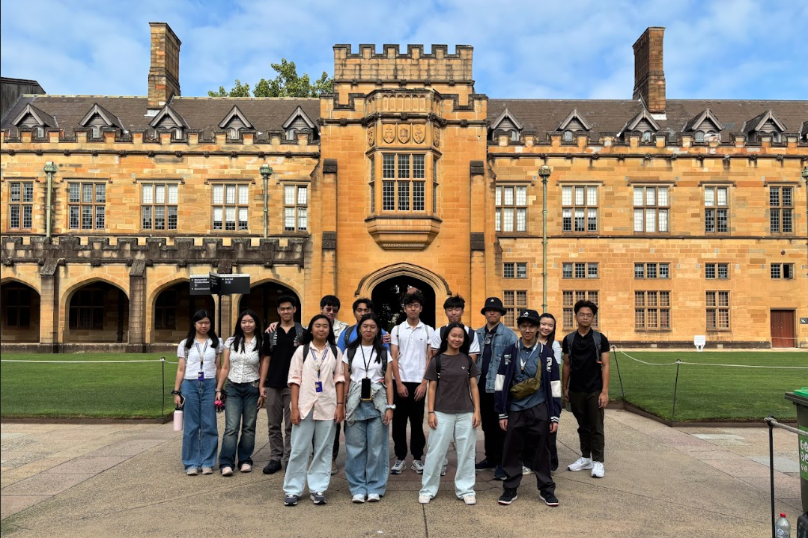
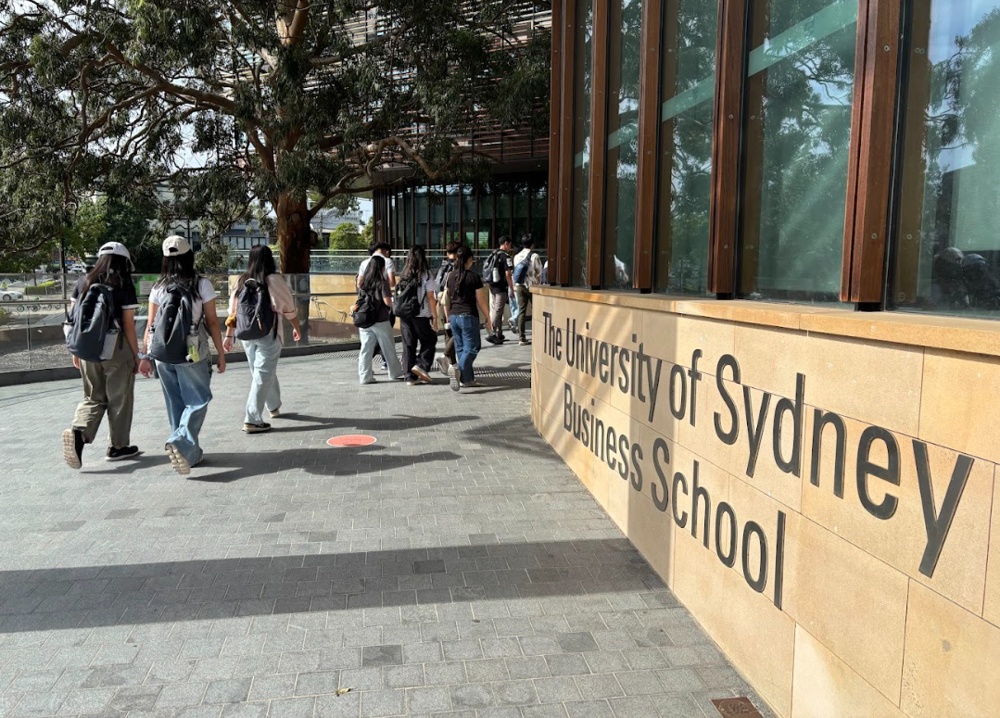
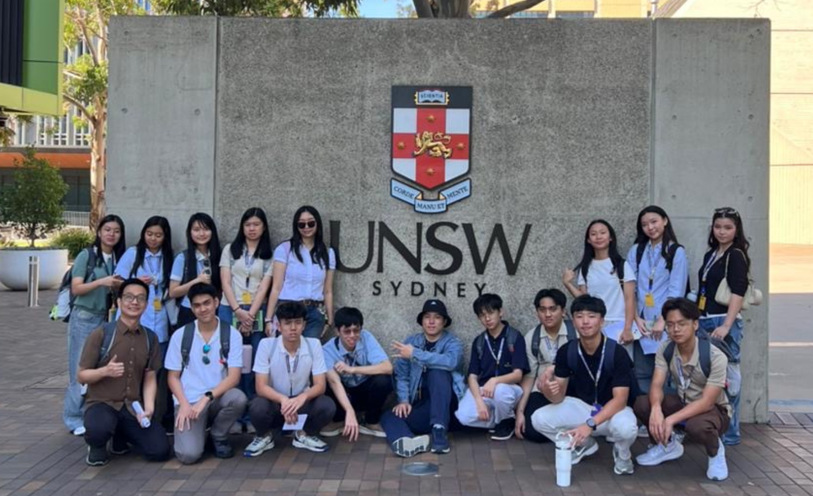
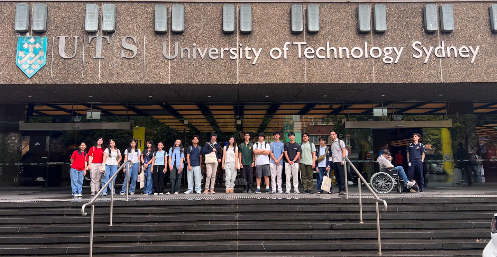
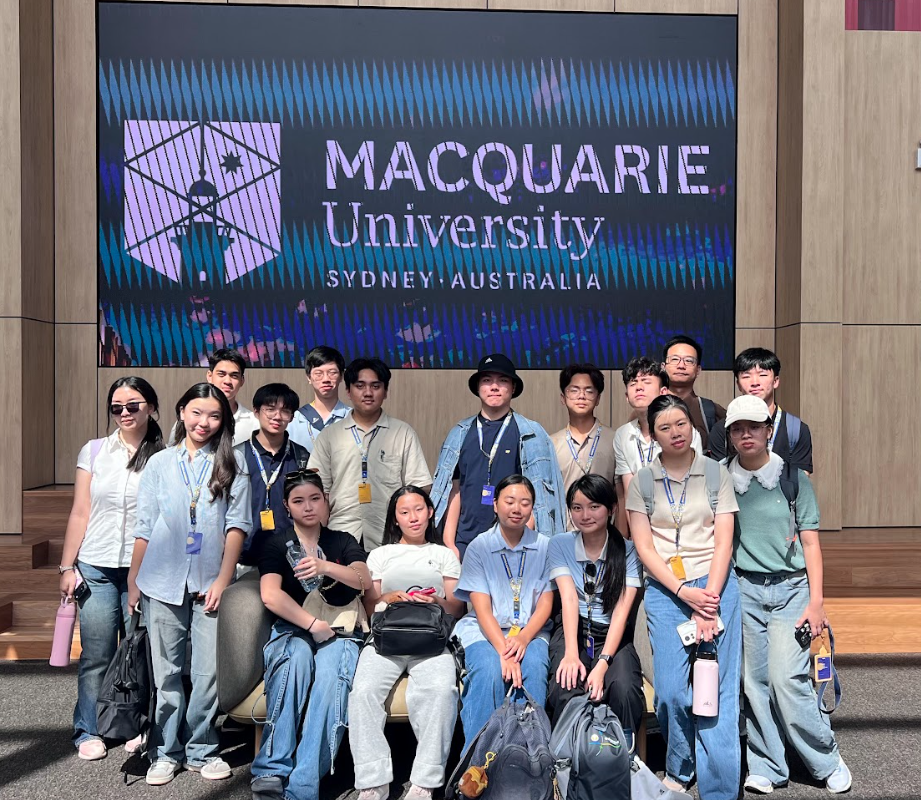
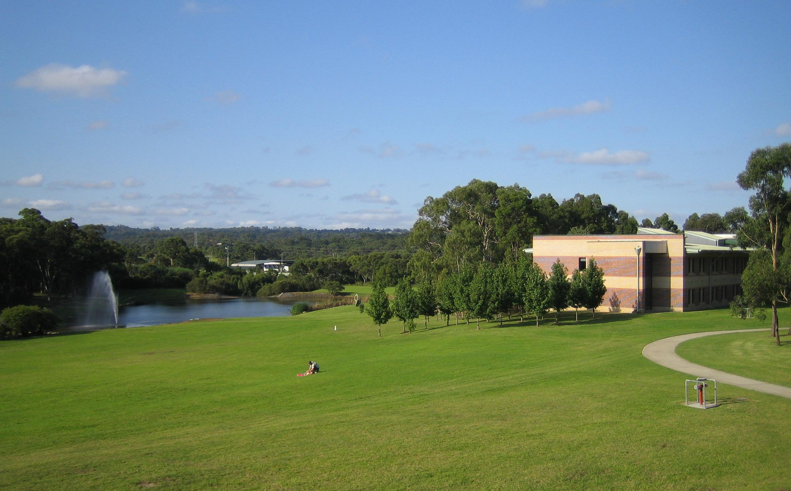

University Tour

University of Sydney
One of the oldest and most prestigious universities in Australia. It is known for strong research in health, technology, and environment. Ranked 25th globally in QS World University Rankings 2026. During our visit, we had a chance to do a business workshop where we brainstorm while eating chocolate.


UNSW Sydney
Known for excellence in engineering, business, and technology. Ranked 20th globally and strong in international collaboration. While our visit in UNSW might be a little too short, we had alot of fun during the showcase of genuine human organ preserved in a museum.

University of Technology Sydney
Known for its practical learning approach and strong industry connections. Ranked within the global top 100 universities.UTS was byfar the most interesting One you get to make your own boat in a engineering class, and which boat can withstand waves and marbel dropped wins.

Macquarie University
Known for its modern campus and strong focus on innovation and research. Macquarie University is recognized for programs in business, science, and technology, and is ranked among the top universities globally. Sadly when we visit this lovely place, we didnt have no activities, however we had our fun enjoying the school museum of artifacts.
